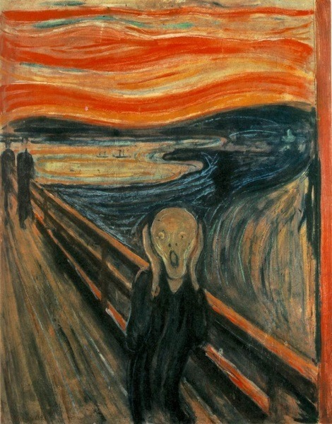

O grito
O Grito é uma série de quatro pinturas do norueguês Edvard Munch, 1893.
A obra representa uma figura andrógina num momento de profunda angústia e desespero. O plano de fundo é a doca do fiorde de Oslo ao pôr do sol.
O seu valor em US$ 119,9 milhões